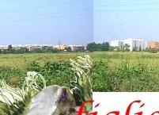
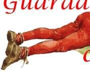
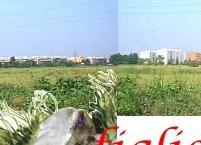
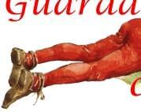

|    |
|   |
| "Guarda, figliolo, come l’uomo cancella la sua memoria!" disse il padre al ragazzetto che, steso fra l’erba del ciglio, osservava curioso. "L� in fondo, fra gli alberi, spunta una chiesetta, � la tomba di uomini antichi che morirono con coraggio e valore per obbedire al desiderio di re e condottieri, bramosi di possedere un Ducato italiano, quello pi� ricco e famoso, quello di Milano". "Ma babbo, chi erano costoro?" gli occhi spalancati sulla favola novella "Erano forti che di l� dalle Alpi giunsero un giorno in questa nostra terra bella per conquistarla, ma furono da questa conquistati. Toccarono con mano i nostri prati, le nostre vigne, i nostri tesori che uomini illustri nel tempo avevano creato. Si specchiarono nelle acque limpide dei fossati e morirono, tantissimi, tra i fiori autunnali chi guardando nell’ultimo istante il sole calante chi la notte stellata". "Ora dormono!" esclam� il fanciulletto rapito. "Si, proprio dove il verde � più intenso e gli alberi pi� belli. Dormono e un gigante di pietra li protegge come insieme protegge l’amico morente". "Oh, un gigante fra noi!!!" e un fremito lo pervase e disse impaziente: "continua, pap�". Lo sguardo lontano nel tempo, la voce tremante, e l’uomo prosegu�. "Non uno, ma tanti giganti; le piume al vento, gli urli sonanti, le trombe, i cavalli, fra tamburi rullanti e spari assordanti. Tutto tace ormai da secoli, il silenzio della piet�". No, non sembra convinto il fanciulletto mentre strappa uno stelo d’erba osservandolo attento: "Cos’� allora questo rumore che si sente vicino,… pap�?". "E’ il progresso che avanza" disse lui, sconsolato "vedi quei mostri attorno? fra poco saranno anche qui, in questo campo glorioso e lo seppelliranno per sempre!". Pi� nessuno dei due parl�; la favola triste finiva e negli occhi rimaneva solo un ricordo dal verde intenso. Era il 14 agosto dell’anno duemila, l’ultimo del millennio, l’ultimo del campo della battaglia dei giganti. Si sent� improvviso urlare: piana!, giardino!, arcobaleno!. Una ruspa avanz� minacciosa soffocando un lamento nel vento: erano gli uomini antichi il cui sonno veniva profanato. pierino |

sito di propriet�
della Associazione
Culturale Zivido
webmaster@aczivido.net